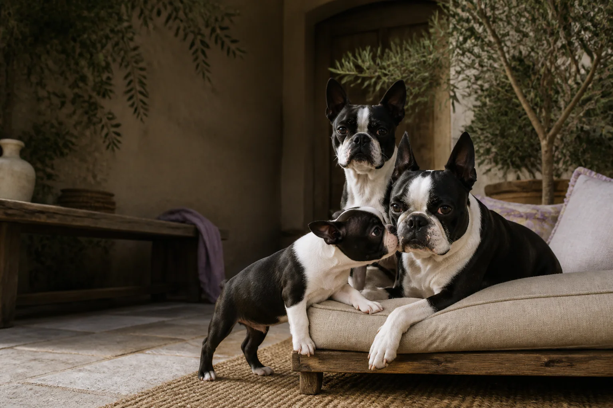

Companheiros
Gostam de estar por perto e participar da rotina de quem confia neles.

Presença, respeito e cuidado
Descubra nossa históriaBoston Terriers criados com presença, respeito e cuidado. Um espaço para conhecer a raça, acompanhar nossas histórias e descobrir vínculos que podem transformar uma rotina.
Visitas combinadas com carinho e tranquilidade.
Nossa história
Mais do que um canil
O trabalho de Alex nasce da convivência, da observação e do respeito pelo jeito único de cada Boston Terrier. Aqui, cada cão possui sua personalidade, sua rotina e sua própria maneira de criar vínculos.
Este espaço foi criado para apresentar nossos cães, compartilhar informações sobre a raça e aproximar pessoas que desejam conhecê-los de perto.
Conversar com AlexO jeito Boston de ser
Há traços comuns à raça, mas cada cão encontra seu próprio ritmo e sua forma particular de se relacionar.
Gostam de estar por perto e participar da rotina de quem confia neles.
O olhar atento e as diferentes expressões fazem parte do encanto da raça.
Energia, curiosidade e momentos divertidos fazem parte do cotidiano.
Conheça nossos cães
Os perfis abaixo são demonstrativos e deixam clara a estrutura que receberá os dados reais de cada cão.
Nomes e dados devem ser confirmados por Alex. Perfil demonstrativo
Perfil demonstrativoAtento ao que acontece ao redor e feliz quando pode acompanhar a rotina com calma.
Quero conhecer Perfil demonstrativo
Perfil demonstrativoCuriosa, observadora e cheia de pequenas expressões que convidam à aproximação.
Quero conhecer Perfil demonstrativo
Perfil demonstrativoUm filhote em fase de descoberta, apresentado aqui como exemplo de perfil editável.
Quero conhecer
Observar os vínculos entre os cães ajuda a compreender suas personalidades, seus limites e sua forma de se relacionar. A convivência respeitosa está presente em cada etapa.
Ninhadas e histórias
Luma*Bento*Este bloco foi preparado para reunir somente informações verificadas, fotografias dos pais e registros respeitosos de cada fase.
Conhecer a rotina
Observar personalidades
Conversar com Alex
Criar confiança
Visitar sem pressa
Galeria
Fotografias autorais criadas para este projeto, com direção visual consistente e sem reproduzir imagens das referências.
Presença nos detalhes
Rotina, descanso, interação e acompanhamento caminham juntos. O espaço foi pensado para comunicar responsabilidade sem fazer promessas que dependem de informações ainda não fornecidas.
Experiências reais, quando chegarem
“Este espaço aguarda um depoimento real, autorizado e revisado antes da publicação.”
— Avaliação ainda não fornecida
“Este espaço aguarda um depoimento real, autorizado e revisado antes da publicação.”
— Avaliação ainda não fornecida
“Este espaço aguarda um depoimento real, autorizado e revisado antes da publicação.”
— Avaliação ainda não fornecida
Perguntas frequentes
Se a sua dúvida não estiver aqui, Alex poderá responder com calma pelo WhatsApp.
Falar com AlexEnvie uma mensagem pelo WhatsApp para conversar com Alex. A visita é combinada com antecedência e organizada de acordo com a rotina dos cães.
Sim. O agendamento ajuda a preparar um encontro tranquilo, sem alterar de forma brusca os momentos de descanso, cuidado e convivência.
A localização pública está identificada como [CIDADE_DO_CANIL]. O endereço completo deve ser compartilhado por Alex somente após a confirmação da visita.
Você pode começar pelos perfis e histórias do site e, depois, conversar com Alex para entender quais encontros fazem sentido no momento.
Sim. Todos os principais botões do site abrem uma mensagem acolhedora para iniciar a conversa e combinar uma visita.
Cada cão tem sua própria personalidade. Antes de tomar qualquer decisão, vale conhecer a rotina, as necessidades da raça e conversar com profissionais de saúde animal de sua confiança.
Informações só devem ser publicadas depois de confirmadas por Alex. O acompanhamento pode reunir registros dos pais, datas e histórias, sempre sem promessas ou dados não verificados.

O primeiro encontro
Se você deseja conhecer melhor a raça, descobrir nossas histórias e passar um tempo com os cães, converse com Alex. A visita é combinada de forma tranquila, respeitando a rotina dos animais.
Agendar uma visita pelo WhatsApp